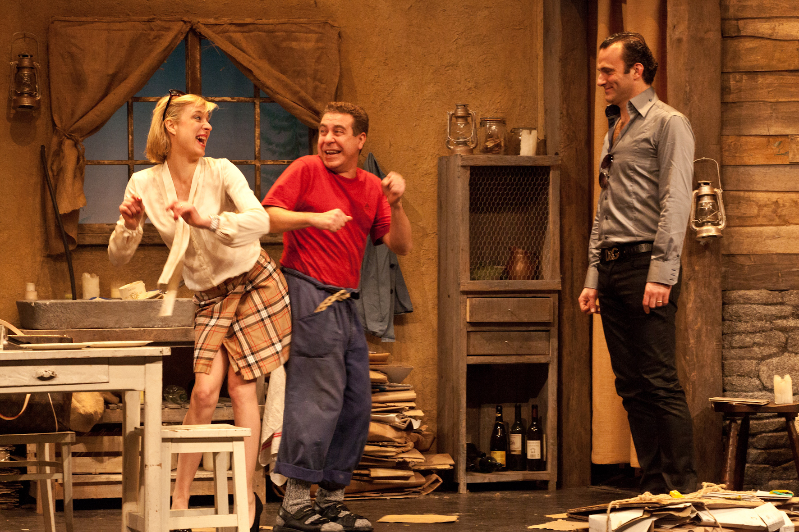
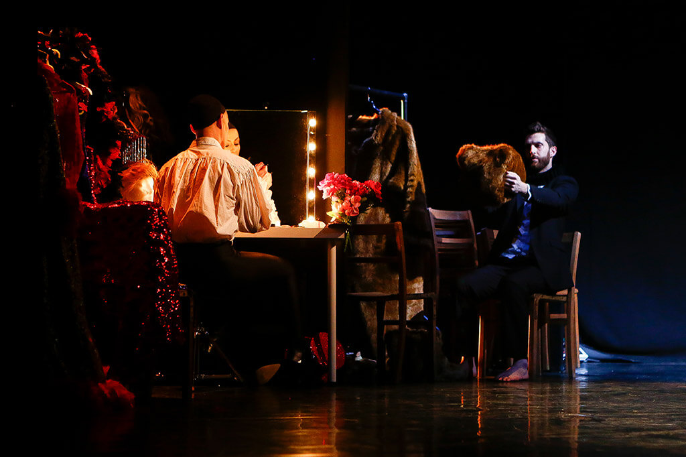

Sans Objet
Cie 111 - Aurélien Bory
Destaques

Quarta-feira: o tempo das cerejas
Cláudia Dias
Teatro
Sans Objet
Cie 111 - Aurélien Bory
Novo Circo

Pequeno cabaret ao amanhecer
Limite Zero
Teatro

A love supreme
Anne Teresa de Keersmaeker & Salva Sanchis/Rosas
Dança
Ver programação completa